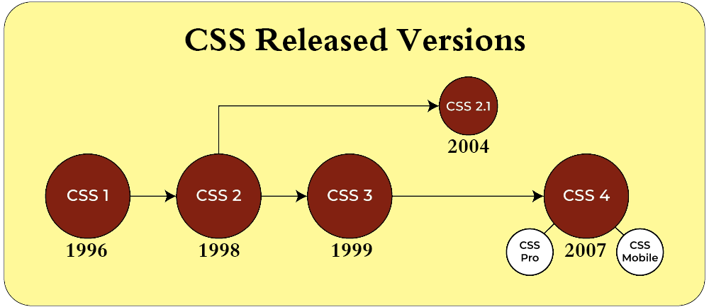
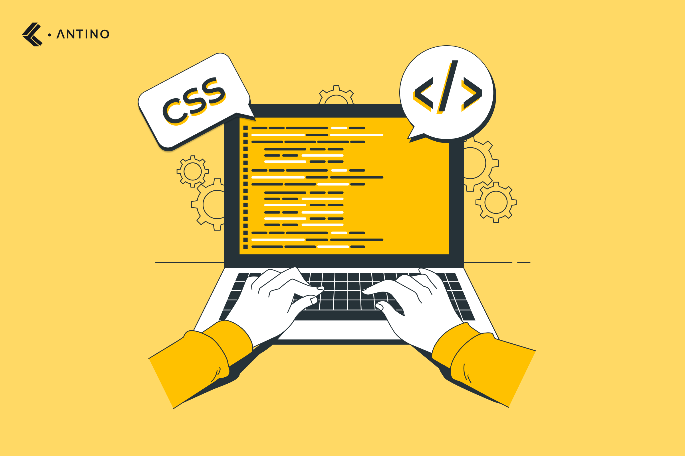

CSS stands for Cascading Style Sheets. It is a style sheet language
used for describing the look and
formatting of a document written in a markup language. It is used to style web pages written in HTML
and
XHTML, but can also be applied to any kind of XML document, including plain XML, SVG and XUL.
History
CSS was first proposed by Håkon Wium Lie on October 10, 1994. At the time,
Lie
was working with Tim Berners-Lee at CERN. Several other style sheet languages for the web were proposed
around the same time, and discussions on public mailing lists and inside World Wide Web Consortium
resulted
in the first W3C CSS Recommendation, a "testbed" draft, in 1996. Lie designed the syntax of CSS,
influenced
by the existing syntax for Standard Generalized Markup Language (SGML), which is the parent language of
HTML.
The first CSS specification was developed by Håkon Wium Lie and Bert Bos.
Håkon
Wium Lie was also the first person to implement CSS, and with Bert Bos, he proposed the first version of
CSS
in 1994. Lie and Bos were the co-authors of the original CSS specification, and working together with
the
W3C, they also introduced the first version of the CSS Recommendation in 1996.

Development

CSS was first proposed by Håkon Wium Lie on
October
10, 1994. At the
time,
Lie
was working with Tim Berners-Lee at CERN. Several other style sheet languages for the web were
proposed
around the same time, and discussions on public mailing lists and inside World Wide Web
Consortium
resulted
in the first W3C CSS Recommendation, a "testbed" draft, in 1996. Lie designed the syntax of CSS,
influenced
by the existing syntax for Standard Generalized Markup Language (SGML), which is the parent
language
of
HTML.
The first CSS specification was developed by Håkon
Wium Lie and Bert
Bos.
Håkon
Wium Lie was also the first person to implement CSS, and with Bert Bos, he proposed the first
version of
CSS
in 1994. Lie and Bos were the co-authors of the original CSS specification, and working together
with
the
W3C, they also introduced the first version of the CSS Recommendation in 1996.
Usage
CSS is designed primarily to enable the separation of document content from
document presentation, including elements such as the layout, colors, and fonts. This separation can
improve
content accessibility, provide more flexibility and control in the specification of presentation
characteristics, enable multiple web pages to share formatting by specifying the relevant CSS in a
separate
.css file, and reduce complexity and repetition in the structural content.
Separation of formatting and content makes it possible to present the same
markup
page in different styles for different rendering methods, such as on-screen, in print, by voice (via
speech-based browser or screen reader), and on Braille-based tactile devices. It can also display the
web
page differently depending on the screen size or device on which it is being viewed. Users can also
specify
a different style sheet, such as a CSS file stored on their own computer, to override the one the author
specified.
CSS specifies a priority scheme to determine which style rules apply if more
than
one rule matches against a particular element. In this so-called cascade, priorities or weights are
calculated and assigned to rules, so that the results are predictable.
The CSS specifications are maintained by the World Wide Web Consortium
(W3C).
Internet media type (MIME type) text/css is registered for use with CSS by RFC 2318 (March 1998). The
W3C
operates a free CSS validation service for CSS documents.
In addition to HTML, other markup languages support the use of CSS including
XHTML, plain XML, SVG, and XUL.